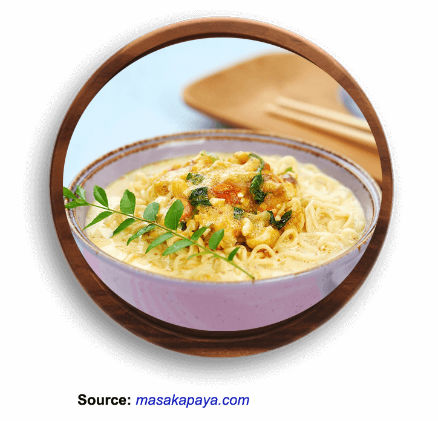

Indomie Salted Egg

The flavour is delicious, definitely taste like salted egg, with a slight hint of cheese! Highly recommend if salted egg is a flavour you like.
Ingredients:
- 1 packet of Indomie Chicken Curry Flavor
- 250 ml of Fresh Milk
- 1 tbsp Butter
- 2 cloves Shallots (sliced)
- 1 tbsp Leek (sliced)
- 2 pieces of Red Chili (sliced)
- 3 Shrimp (peeled and chopped)
- 7 Curry Leaves
- 1 Salted Egg
- 3 tbsp Water
How to cook:
- Put Indomie Chicken Curry Flavor in boiling water for 3 minutes. Lift and drain.
- Boil the fresh milk, add Indomie Chicken Curry seasonings.
- Heat the butter, sauté onion until fragrant, add leeks and cayenne pepper. Add shrimp and curry leaves, sauté until cooked shrimp. Add salted eggs, stir. Lift. Set aside.
- Pour the soup noodles into a serving bowl, add the salted egg stir in the top. Serve.